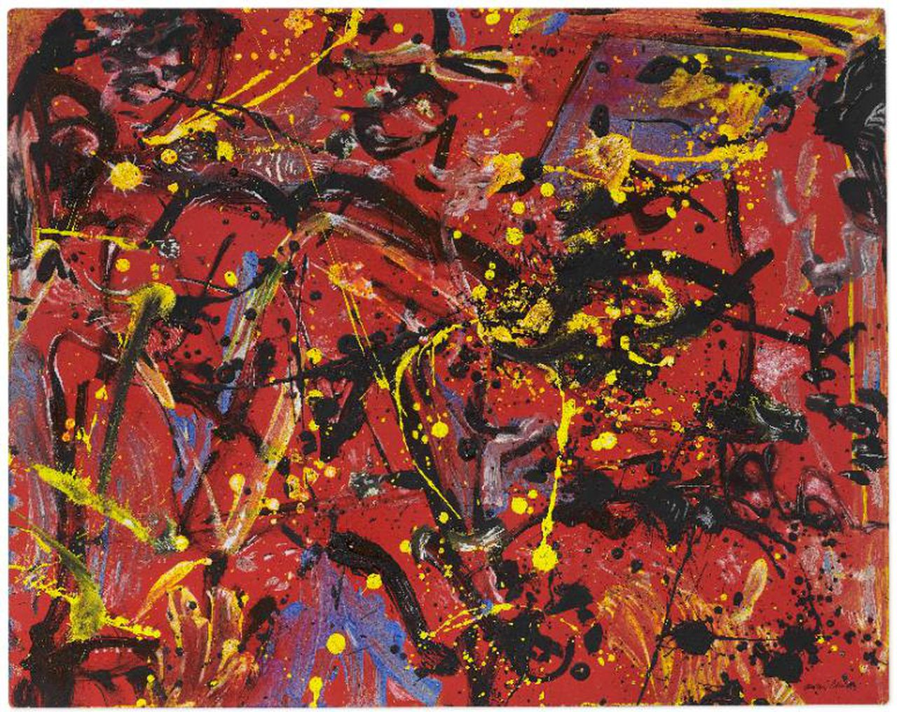

Human conversation is a daily occurrence that we engage in every single day. The conversations that we have are all unique in their own respective manner. Conversation can be short or lengthy, serious to light hearted and loud to quiet as well. What our group wanted to do was to find a way to visually represent these unique conversations. Ultimately, the aspect of conversation that we wanted to showcase the human voice as a form.
Pollock, Jackson. Red composition. (1946)
Drawing inspiration from different artists/art forms such as abstract painter Jackson Pollock along with artists such as Nam June Paik and Sonia Cillari who used technology as a medium of their art form. Since our group’s focus was to create a visual image of the human conversation, we took a formalistic approach which focussed on composition, color, line and form to help guide us to transcribe the different aspects of the human voice. We took inspiration from As an Artist, I Need to Rest (2009) by Sonia Cillari, which, similar to her artwork of implementing the breaths of participants to create digital images, we took the voices of these participants instead to create visually pleasing digital art. The end composition, a culmination of lines and colors, is inspired by Pollock’s paintings, such as Red Composition (1946) specifically the erratic energy and colors of the painting. Rather than creating simple sound waves to represent the human voice, we wanted to compose a visual image that would represent the culmination of a conversation. However unlike Pollock’s work whose brush strokes were placed in a random order and thickness, our final visual output created a more fractal design.
The kaleidoscope generates based on volume, pitch, and silence. The Kaleidoscope only generates when volume from a participant is picked up. As a result, when participants express an entire thought (continuing to talk over a period of time) a pattern will continue to draw until there is a break in the conversation causing the pattern to fade out and die. This way participants are able to observe when complete ideas are communicated. The pitch data is also recorded and used to modify the brightness of the line’s stroke color. As the pitch gets higher the brightness increases causing the color to appear lighter and as the pitch gets lower the stroke color becomes darker.
The human voice has different characteristics as well such as pitch and volume. Depending on how a conversation goes, the topic and the people, certain characteristics of a person’s voice can change. Within the human-to-human interaction, a person’s voice and personality can take dominance in a conversation. All of these aspects are what we wanted to illustrate within an entirety of a conversation. We referred to one of Dieter Daniels’ Strategies of Interactivity, “Interaction through body interfaces” to merge together the concepts of data and the human voice. By creating a program that takes in human voice data which then creates an illustration of different line strokes, it refers back to Daniels’ point where data is connected to the human body. However, instead of the physical, we re-interpreted Daniel’s strategy of body interface and focussed on the human voice as an extension of the human body.
Paik, N,J. Participation TV. (1969).
Nam June Paik’s Participation TV (1963) also played a significant role in our project's creation. In the work, viewers speak into a microphone to manipulate the display on a TV. This manipulation results in wild visuals of moving light patterns. As the inspiration of our project, we took the concept of viewers interacting with the artwork in a way similar to Participation TV, however, in our case we used perlin noise to create kaleidoscope-like patterns. Though, compared to Paik’s Participation TV, where the viewers have to be physically present to interact with said exhibition, our project's final product allows users to connect to the ‘canvas’ through the internet, in which anyone may interact with from anywhere.
Tate Modern. (n.d.). Formalism | Tate. Tate Modern. Retrieved December 1, 2022, from https://www.tate.org.uk/art/art-terms/f/formalism
The Art Story. (n.d.). Formalism in Modern Art - Modern Art Terms and Concepts. The Art Story. Retrieved December 1, 2022, from https://www.theartstory.org/definition/formalism/
Media Art Net. (n.d.). Media Art Net | Paik, Nam June: Participation TV. Medien Kunst Netz. Retrieved December 1, 2022, from http://www.medienkunstnetz.de/works/participation-tv/
LIMA. (n.d.). As an Artist, I Need to Rest. As an Artist, I Need to Rest | www.li-ma.nl. Retrieved December 1, 2022, from https://www.li-ma.nl/lima/catalogue/art/sonia-cillari/as-an-artist-i-need-to-rest/17277
Daniels, D. (2002). Strategies of Interactivity. Media Art Net | Source Text. Retrieved October 2, 2022, from http://www.medienkunstnetz.de/source-text/65/
Huhtamo, E. (2004).Trouble at the Interface, or the Identity Crisis of Interactive Art. FRAME Finnish Fund for Art Exchange.